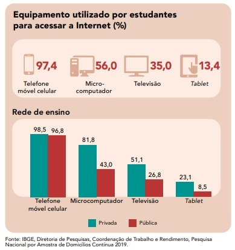
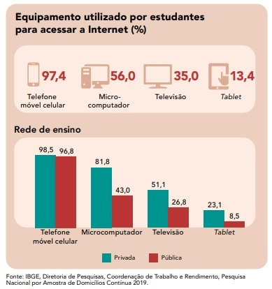

Dicas de Estudo - Vestibular
A pesquisa do IBGE observou que entre os equipamentos com internet utilizados pelos estudantes para estudo estão o microcomputador (56,0%), televisão (35,0%) e tablet (13,4%). Como resultado, temos o gráfico abaixo:

A pesquisa do IBGE observou que entre os equipamentos com internet utilizados pelos estudantes para estudo estão o microcomputador (56,0%), televisão (35,0%) e tablet (13,4%). Como resultado, temos o gráfico abaixo:
Historicamente, os movimentos sociais tiveram participação na conquista de inúmeros direitos para a sociedade. O movimento feminista guiou a luta pelo sufrágio feminino, garantindo que as mulheres pudessem votar; já o movimento negro esteve à frente dos esforços pelas leis que criminalizam o racismo, pela lei de cotas nas universidades públicas e pela obrigatoriedade de incluir no currículo oficial das escolas o estudo da história e da cultura afro-brasileira.
 Continue Lendo!
Continue Lendo!
Estado e cidadania são temas bastante amplos. Porém, há alguns tópicos que não podem ficar de fora dos seus estudos, como a formação do Estado moderno, o conceito de cidadania (como foi construída e os direitos dos cidadãos), além da relação entre Estado e poder. Nas questões que tratam desses assuntos, é comum aparecerem discussões sobre o Brasil. É importante saber, por exemplo, como funcionam os Três Poderes (Executivo, Legislativo e Judiciário) e suas atribuições, além de saber o que se destaca na Constituição (entendendo quais são os direitos e deveres dos cidadãos e do Estado).
 Continue Lendo!
Continue Lendo!
Patrimônio material e imaterial, etnocentrismo, indústria cultural, diversidade, relativismo, determinismo e estruturalismo cultural são alguns dos assuntos que aparecem no contexto desse grande tema. No Enem, dois deles são mais frequentes: patrimônio material e imaterial, e indústria cultural. Nesse caso, vale ter os conceitos na ponta da língua. Por mais que as questões pareçam interpretativas, isso pode fazer a diferença:
O assunto que mais aparece no Enem quando se trata de Sociologia Brasileira são as manifestações culturais do país. As questões costumam ser de caráter interpretativo, o que significa que não é necessário entender tudo sobre as diferentes culturas de cada região. Basta compreender os principais conceitos de cultura e sociedade (vistos acima), e relacioná-los com essas manifestações no Brasil.